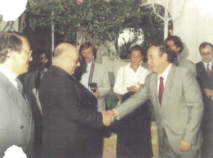
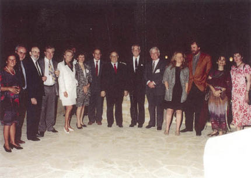

Rauf Denktaş’ı 1975’ten beri tanıyorum. İlk tanışmamız bir akademisyen arkadaşımın beni Lefkoşe’de, Rauf Denktaş’ın çalışma makamına götürmesiyle başladı.
Oysa ben eşimle birlikte o zamanki adı ile Kıbrıs Türk Federe Devleti’ne tatil için gitmiştim. Girne’deki Dome Oteli’nde tesadüfen karşılaştığım profesör arkadaşım, ısrarla beni Rauf Denktaş’la tanıştırmak istiyordu.
Ben o tarihte, dış ticaret ve uluslararası ilişkiler alanında, yeni profesör olmuş bir akademisyendim. Kamuoyunda tanınıyordum. Prof. Yüksel Ülken, Prof. Erdoğan Alkin’le birlikte TRT’de iktisat programları yapıyorduk. Türkiye’nin tek televizyon kanalındaki yegane iktisat programı idi. Ekonomik ve Sosyal Etütler Konferans Heyeti’nin yıllık konferanslarında boy gösteriyordum ve Milliyet’te sevgili Ali Gevgilili’nin çok sık konuğu oluyordum.
Ayrıca “Düşünenlerin Düşüncesi” köşesinde de oldukça yoğun makalelerim yayınlanıyordu.
Yeni kurulan Kıbrıs Türk Federe Devleti’nin başkanı Rauf Denktaş bana, “Senin gibi genç akademisyenlere ihtiyacımız var, bize yardım edin,” dedi.

İlk olarak Magusa’da bir serbest ticaret bölgesinin kurulmasını önerdim ve bunun dünyadaki örnekleri ile ilgili malzemeyi yardımcılarına sağlayabileceğimi ifade ettim.
Kıbrıs Türk Federe Devleti’nin Ticaret Bakanı Tuncay Arifoğlu ile temas kurmamı sağladı ve ben de bir akademisyen olarak bildiklerimi ilgililere aktardım.
O tarihlerde Raif ve Serdar Denktaş daha gençlik yıllarındaydılar. Serdar’ı ve rahmetli Raif’i daha o zamanlar tanıma fırsatım oldu.
Herkes beni Rauf Denktaş’ın danışmanı zannetmeye başlamıştı. Ben de ısrarla, “Danışman falan değilim. İktisat Fakültesi’nden bir akademisyen olarak bildiklerimi kurumlara sunmak benim zaten doğal işim,” diyerek yanıt veriyordum.
Buna rağmen, o günlerden bugüne kadar Denktaş’ın danışmanı olduğuma dair yüzün üzerinde yazı yayımlanmıştır.
1984 yılından 1994’e kadar 10 yıl boyunca her yıl mayıs ayında Girne’de, Uluslararası Girne Konferansları’nı düzenledim. Bunlar akademik konferanslardı ve dünyanın her yerinden konunun uzmanları geliyordu. Bazı akademisyen ve gazeteci arkadaşlar bana takılır ve “Erol Hoca, Girne konferansları, Davos’un yaz versiyonu,” derlerdi.
On yıl boyunca Girne konferanslarına Avustralya’dan Japonya’ya, İngiltere’den Kanada’ya kadar en yetkili ve tanınmış uzmanlar geldi.
Dr. Andrew Mango’dan Geoffrey Lewis’e, Alman müsteşarlardan Japonya’nın Ortadoğu uzmanlarına kadar gelmeyen yoktu. Türkiye’den Mesut Yılmaz, Kamuran İnan gibi bakanlar ve politikacılardan Nevzat Yalçıntaş gibi birçok akademisyene; Halit Refiğ’den Londra Middle East dergisinin genel yayın yönetmenine kadar yüzlerce aktif katılımcı geldi.
Girne konferansları her yıl mayıs ayının ikinci haftasında, Rauf Denktaş’ın görkemli açılış konuşmasıyla başlar ve üç gün devam ederdi.
Tebliğ ve tartışmalar Türkçe ve İngilizce kitap olarak basılır ve ilgililere dağıtılırdı. Girne konferansları Avrupa ülkelerinin, ABD, Japonya, Avustralya, Mısır ve İsrail’in pek çok yayın organında yayınlanmıştır. Bugün hâlâ en önemli kaynak kitap özelliğini taşırlar.
Girne konferanslarına Denktaş büyük önem verirdi. 1994’te sona erdiğinde çok üzüldü. 1990 sonrasında artık “sponsor” bulamıyorduk. Dünyada, bölgede ve Türkiye’de hava hızla değişiyordu.
Batı’nın yeni bölge ve Türkiye politikası ile birlikte KKTC-Türkiye ilişkileri artık farklı bir zemine oturtuluyordu.
Bu zeminde Denktaş’ın, KKTC’nin ve Türkiye-KKTC ilişkilerinin durumu hızla değişecekti. Artık her şey Büyük Ortadoğu Projesi’nin gerçeklerine göre yürütülüyordu.
Ve bu yeni zeminde Rauf Denktaş’ın Kıbrıs’ta, Türkiye’de ve uluslararası platformda savunduğu fikirler rafa kaldırılıyordu.
Denktaş’la 1975’ten beri süren ilişkim, Türkiye’nin, bölgenin ve dünyanın dönüşüm sürecine göre dalgalanmalar gösterdi. Ama değişmeyen bir tek şey vardı, işin insani boyutunda sağlam diyaloğumuz hiç değişmedi. Ona ve düşüncelerine verdiğim değer aynı kaldı.
Çok açık davrandık
Denktaş’la olan birlikteliğimizde ailenin bir ferdi, bir büyük, bir dost havası baştan beri egemen oldu. Aydın Hanım, bizim için de bir aile büyüğü idi.
Ailece kutladıkları kimi yılbaşlarına Nuriye’yi, Kunter’i, Barış’ı ve beni, ailesinin bir parçası gibi davet ettiler.

1988’de Girne Konferansı, Tuğba Çandar, Prof. Faruk Şen, Dr. Andrew Mango, Vahit Halefoğlu, Dr. Wilhelm Hummen,
Daniel Newburry, Gül, Niki Gam, Erol Manisalı, Nuriye Manisalı, Denktaş’la açılış kokteylinde